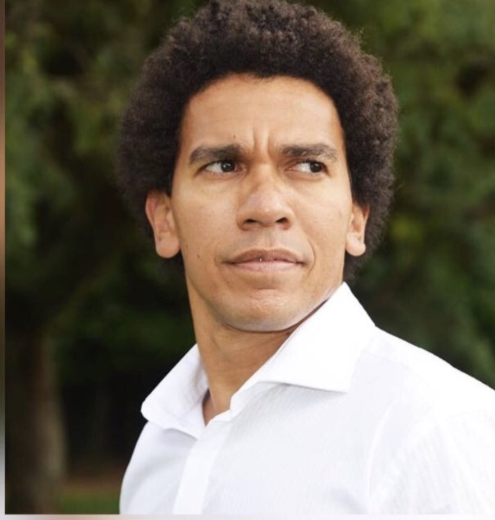

Marcelo Porfirio

Summary
I am a focused person and always with objectives to achieve my goals
Education
- 1999 -2003 Bachelor of Laws from Universidade Paulista -UNIP
- 2004 - 2005 Police detective (criminal) “Dr. Coriolano Nogueira Cobra” São Paulo
Work experience
- 1992 - 1994 Public service assistant at the franchise company Francap Sistemas de Franquia S/A in São Paulo
- 1999 - 2003 Assistant at the law office Doutor Clóvis de Mello.
(Help in conducting court hearings, preparing and presenting petitions, calculating costs, etc.)
- 1999 – 2002 Financial manager at the real estate company Condomínio Edifício Galeria Almira Gonçalves (balance sheets, preparation of payrolls, press releases, etc.)
- 2004 - 2008 Detective of the Criminal Police Department of the Government of the State of São Paulo, Brazil
Skills
- Computer literate
- Research expertise
- Team management
- Others languages
- Crisis management
- Experience in public and private security
Certifications
- Forensic Psychology
- Expert evidence (OAB/SP)
- Professional ethics (OAB/SP)
- First aid
- Gun and shooting technique
- Self-defense
- Criminology
- Criminalistics
- Police ethics
- Community policing
- Basics of forensic medicine
- Public and private security
- Personal defense
- Cibersecurity:
- Foundations of Cybersecurity
- Networks and Networksecurity>
- Detections and response
- Assets, Threats, and Vulnerabilities
- Manage Security Risks
- Linux and SQL
- Python
- Creating a Virtual Machine
Others